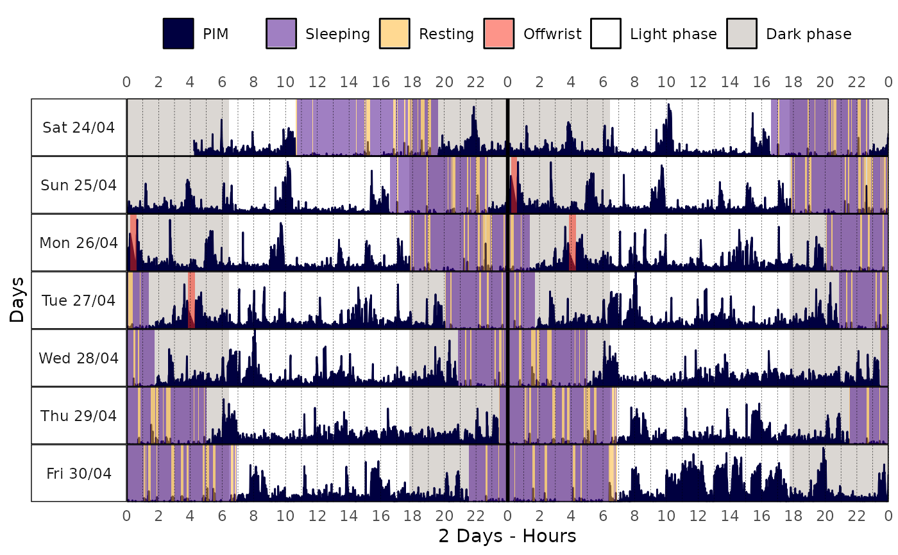

actogram() creates an actogram
plot from a tsibble time series object, visualizing
activity patterns across multiple days.
Usage
actogram(
data,
col = "pim",
days = 7,
transform = identity,
state_col = "state",
state_alpha = 0.5,
latitude = NULL,
longitude = NULL,
sun_stats_method = "suncalc",
labels = NULL,
colors = NULL,
grid = TRUE,
minor_breaks = ggplot2::waiver(),
date_format = "%a %d/%m",
locale = get_en_locale(),
double_plot = TRUE,
x_label = NULL,
y_label = NULL,
print = TRUE,
...
)Arguments
- data
A
tsibbleobject.- col
(optional) A string indicating which column of
datato use for the area plot (default:"pim").- days
(optional) A number specifying how many days to display in the actogram. Use a negative value to exclude days from the end of the record. Set to
Infto plot all available days (default:7).- transform
(optional) A transformation function to apply to
col(default:identity).- state_col
(optional) A string indicating which column of
datahave the states/categories data (default:NULL).- state_alpha
(optional) A number, from
0to1, indicating the transparency level of the state rectangles (default:0.5).- latitude
(optional) A number indicating the latitude in decimal degrees that must be used to compute the light/dark phase. Set this argument to
NULLwhen the light/dark is not needed. See the Details section to learn more (default:NULL).- longitude
(optional) A number indicating the longitude in decimal degrees that must be used to compute the light/dark phase. Set this argument to
NULLwhen the light/dark is not needed. See the Details section to learn more (default:NULL).- sun_stats_method
(optional) A string indicating the method to use for computing the light/dark phase. See
get_sun_stats()for more details (default:"suncalc").- labels
(optional) A named character vector to rename states in the legend. Must include labels for any used state values, and
"base"(label forcol),"lp"(light phase), and"dp"(dark phase) if applicable. See the Details section to learn more.- colors
(optional) A named character vector of colors to use for each label/state. Must include named colors for any states used in
labels, as well as for"base"(color forcol),"lp"(light phase), and"dp"(dark phase). See the Details section to learn more.- grid
(optional) A
logicalflag indicating if the plot must have an overlay grid (default:TRUE).- minor_breaks
(optional) A
numericvector indicating the minor breaks on the x-axis (default:waiver()).- date_format
(optional) Format string passed to
format()for rendering date axis labels (default:"%a %d/%m").- locale
(optional) A string indicating the locale the
LC_TIMEenvironment variable must be set to. This is used to determine the language of the date labels (default:en_US.UTF-8).- double_plot
(optional) A
logicalflag indicating whether to stack 24-hour periods in a double-plot layout (default:FALSE).- x_label
(optional) A string indicating the x-axis label (default:
NULL).- y_label
(optional) A string indicating the y-axis label (default:
NULL).(optional) A
logicalflag indicating if the function must print the plot (default:TRUE).- ...
(optional) Additional arguments passed to
theme().
Value
A ggplot object with the actogram plot.
Details
Vertical lines in the plot
In some cases, you may notice thin vertical lines in the actogram visualization. This is a rendering artifact that can depend on your graphic device, graphics card, screen resolution, or the plot's size.
If you encounter this, try resizing the plot window (for example, making it
more square or adjusting its dimensions), which often resolves the problem.
We also strongly recommend using the ragg
package for rendering graphics, as it can help avoid these artifacts.
Light/Dark phase
The light/dark phase is determined using the first timestamp of the time series. The time zone is inferred from this timestamp as well. If the time zone does not correspond to the provided latitude and longitude, the calculated light/dark phases may be misaligned.
transform argument
actogram() allows you to provide a function for transforming the base
data. This is useful when dealing with extreme ranges.
Example:
library(magrittr)
trans_fun <- function(x) {
log(x) |>
inset(log(x) < 1, 1) |>
subtract(1)
}
acttrust |>
actogram(
col = "light",
days = 1,
transform = trans_fun,
double_plot = FALSE
)
labels argument
The labels arguments allow you to customize the labels of the states in the
actogram. It must be a named character vector, where the names are the state
values and the values are the labels to be used in the legend. The order of
the labels will be the same as the order of the labels argument.
Example (default setting):
labels <- c(
"1" = "Sleeping",
"2" = "Resting",
"4" = "Offwrist",
"base" = "PIM",
"lp" = "Light phase",
"dp" = "Dark phase"
)colors argument
The colors arguments allow you to customize the colors of the states in
the actogram. Like the label argument, it must be a named character vector,
where the names are the state values and the values are the colors to be
used in the legend. The names of the colors must match the names of the
labels.
The colors follow the conventions used in ggplot2.
You can specify either standard color names or
hexadecimal color codes.
Click
here
to see the ggplot2 color reference.
Example (default setting):
colors = c(
"1" = "#410085",
"2" = "#FFB426",
"4" = "#FC2913",
"base" = "#000040",
"lp" = "#FFFFFF",
"dp" = "#DBD7D3"
)Examples
library(curl)
#> Using libcurl 8.5.0 with OpenSSL/3.0.13
if (has_internet()) {
file <- get_from_zenodo(
doi = "10.5281/zenodo.4898822",
dir = tempdir(),
file = "processed.txt"
)
data <- read_acttrust(file, tz = "America/Sao_Paulo")
data |>
actogram(
col = "pim",
days = 7,
# github.com/danielvartan/orbis
# orbis::get_brazil_state_latitude("sp")
latitude = -23.55065,
# orbis::get_brazil_state_longitude("sp"),
longitude = -46.63338,
double_plot = TRUE
)
}
#> ℹ Downloading metadata
#> ✔ Downloading metadata [751ms]
#>
#> ℹ Downloading file
#> ✔ Downloading file [8ms]
#>
#> ℹ Checking file integrity
#> ✔ Checking file integrity [17ms]
#>
#> ℹ Reading data
#> ✔ Reading data [302ms]
#>
#> ℹ Tidying data
#> ✔ Tidying data [577ms]
#>
#> ℹ Validating data
#> ℹ Found 2 gap in the time series: 2021-04-26 03:14:00/2021-04-26 03:14:00 and 2021-05-01 17:34:00/2021-05-01 17:34:00 (showing up to a total of 5 values).
#> ℹ Validating data
#> ℹ Found 21 offwrist blocks in the time series. All values were set as NA.
#> ℹ Validating data
#> ✔ Validating data [17.3s]
#>
